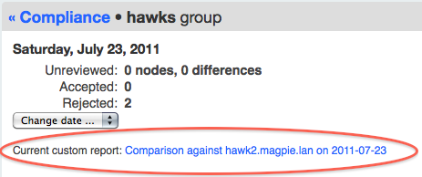

Navigation
- Introduction
- Overview
- Installing
- Upgrading
- Using Puppet Enterprise
- The Accounts Module
- Puppet Compliance
- Puppet Compliance Basics and UI
- Using the Puppet Compliance Workflow
- Compliance Workflow Tutorial
- Known Issues
- Troubleshooting
- Answer File Reference
Using the Puppet Compliance Workflow
The Puppet Compliance workflow consists of the following routine tasks:
- Preparing new agent nodes for compliance reporting
- Writing compliance manifests
- Reviewing changes
- Comparing whole groups against a single baseline
Preparing Agent Nodes For Compliance Reporting
Since agent nodes under compliance auditing need to submit a slightly different type of report, you will need to apply the baselines::agent Puppet class to any node whose resources you want to audit. This class installs a cron job that runs puppet inspect every day at 8pm.
You can apply this class in Puppet Dashboard. Refer to the instructions for enabling MCollective for instructions on how to apply a Puppet class with Dashboard.
Writing Compliance Manifests
Once compliance reporting has been enabled on your agent nodes, a sysadmin familiar with the Puppet language should write a collection of manifests defining the resources to be audited on the site’s various computers.
In the simplest case, where you want to audit an identical set of resources on every computer, this can be done directly in the site manifest (/etc/puppetlabs/puppet/manifests/site.pp). More likely, you’ll need to create a set of classes and modules that can be composed to describe the different kinds of computers at your site, then assign those classes using Puppet Dashboard or site.pp.
To mark a resource for auditing, declare its audit metaparameter. The value of audit can be one attribute, an array of attributes, or all. You can also have Puppet manage some attributes of an audited resource.
file {'hosts':
path => '/etc/hosts',
audit => 'content',
}
file {'/etc/sudoers':
audit => [ensure, content, owner, group, mode, type],
}
user {'httpd':
audit => 'all',
}
# Allow a user to change their password, but notify Puppet Compliance when they do:
user {'admin':
ensure => present,
gid => 'wheel',
groups => ['admin'],
shell => '/bin/zsh',
audit => 'password',
}
Reviewing Changes
To audit changes, first scan the day’s node and group summaries to see which nodes have unreviewed changes.

Once you’ve seen the overview, you can navigate to any pages with unreviewed changes. If there are any unreviewed changes on previous days, there will be a warning next to the date changer drop-down, and the drop-down will note which days aren’t fully reviewed.
Changes can be accepted or rejected. Accepted changes will become part of the baseline for the next day’s comparisons. Rejecting a change does nothing, and if an admin doesn’t manually revert the change, it will appear as a difference again on the next day’s comparisons.
When accepting multiple days’ changes to the same resource, the most recently accepted change will win.
Reviewing Individual Nodes
Changes to individual nodes are straightforward to review: navigate to the node’s page, view each change, and use the green plus and red minus buttons when you’ve decided whether the change was legitimate.

Each change is displayed in a table of attributes, with the previously approved (“baseline”) state on the left and the inspected state on the right. You will also see links for viewing the original and modified contents of any changed files, as well as a “differences” link for showing the exact changes.
You can also accept or reject all of the day’s changes to this node at once with the controls below the node’s summary. Note that rejecting all changes is “safe,” since it makes no edits to the node’s baseline; if you reject all changes without manually reverting them, you’re effectively deferring a decision on them to the next day.
Reviewing Groups
If you’ve collected similar nodes into Dashboard groups, you can greatly speed up the review of similar changes with the “Common Differences” tab. You can also use the “Individual Differences” tab to navigate to the individual nodes.
Same Change on Multiple Nodes

If the same change was made on several nodes in a group, you can:
- Accept or reject the change for all affected nodes
- View the individual node pages to approve or reject the change selectively
Different Changes to the Same Resource

If different changes were made to the same resource on several nodes, the changes will be grouped for easy comparison. You can:
- Accept or reject each cluster of changes
- View the individual node pages to approve or reject the changes selectively
Convergence of differing baselines

If several nodes in a group had a different baseline value for one resource but were recently brought into an identical state, you can click through to examine the previous baselines, and can:
- Approve or reject the single new state for all affected nodes
- View the individual node pages to approve or reject the changes selectively
Comparing Groups Against a Single Baseline
Puppet Compliance can also generate custom reports which compare an entire group to a single member node’s baseline. While the day-to-day compliance views are meant for tracking changes to a node or group of nodes over time, custom reports are meant for tracking how far a group of nodes have drifted away from each other.
- Custom reports only examine the most recent inspection report for each group member
- Custom reports do not allow you to approve or reject changes
Dashboard will maintain one cached custom report for each group; generating a new report for that group will erase the old one.

Custom reports are generated from Dashboard’s core group pages — not from the compliance group pages. To generate a report, choose which baseline to compare against and press the generate button; the report will be queued and a progress indicator will display. (The indicator is static markup that does not automatically poll for updates; you will need to reload the page periodically for updated status on the report.)
Once generated, custom reports can be viewed from Dashboard’s core group pages, the main compliance overview page, and the compliance group pages.



A custom report is split into a “Common Differences” tab and an “Individual Differences” tab. This is very similar to the layout of the group compliance review pages, and should be read in the same fashion; the only difference is that all comparisons are to a single baseline instead of per-node baselines.